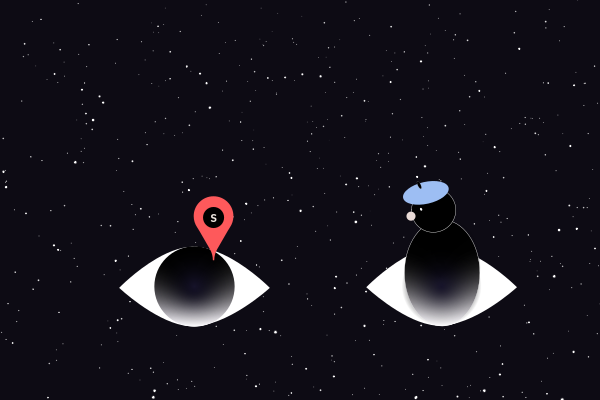
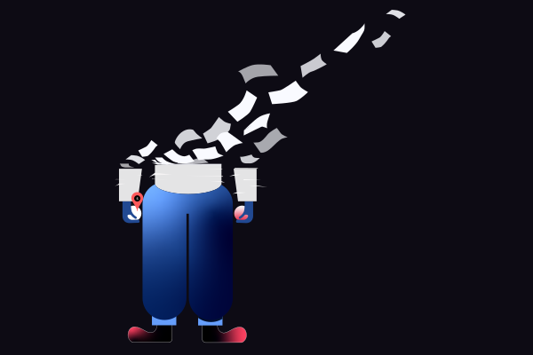
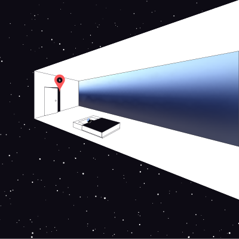
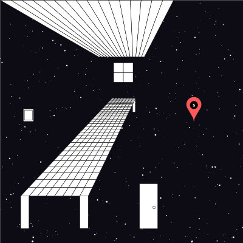
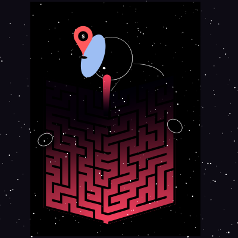
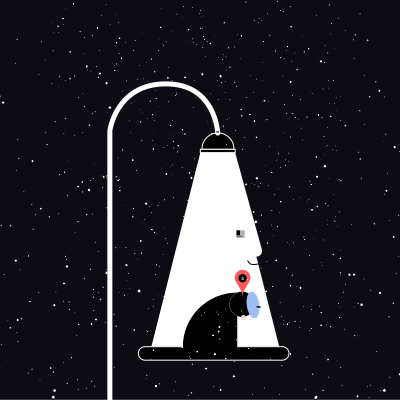
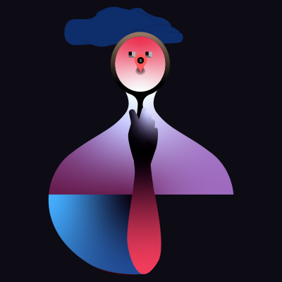

Protokol 01 — Feltguide
Nærkontakt-protokollen
Lær at identificere lækagepunkterne i dit eget perceptuelle system. Interaktiv kortlægning af de 7 primære indgangskanaler.
Åbn feltguidenDit narrative system er kompromitteret. Drømmemateriale trænger ind i vågentilstanden med stigende frekvens. Vi har protokollerne. Du har stadig tid.
Drømlækage — visualiseret
Dit narrative system er kompromitteret.
Drømmemateriale detekteret — Grad 2 lækage i gang.
Nødberedskabsmoduler 02 aktive protokoller

Lær at identificere lækagepunkterne i dit eget perceptuelle system. Interaktiv kortlægning af de 7 primære indgangskanaler.
Åbn feltguiden
Officiel registrering af din drømlækagehændelse. Alle data indgår i det kollektive drømmekatalog. Behandlingstid: 3–5 søvncyklusser.
Start rapportSeneste hændelser Live — opdateres pr. søvncyklus

Hændelsesrækkefølge kan ikke rekonstrueres for de ramte. Systemet anbefaler omgående konsultation af feltguiden og narrativ forankring via monoton 432 Hz-tone.
Læs protokollen
Samtaler høres baglæns. Temporale strukturer kompromitteret. Håndtering: undgå kompleks rytmisk musik i 24 timer.
Indberet hændelse
Systemet registrerer fortsat stigende aktivitet i REM-fase 3–4. Peak-tidspunkt fastholdt ved 03:47 lokal tid.
Bidrag til kataloget
Jord efter regn og ukendte blomster. Stærke neutrale dufte — kaffegrums eller citrus — anbefales i 3 × 30 sekunders intervaller.
Se protokol
Det venstre øje registrerer rumlig lækage. Fokusér på et fast punkt i 90 sekunder for at recalibrere spatial kortlægning.
Kortlæg node-punktDirekte stimulering af portalzonen kan resultere i permanent narrativ kohærenstab. Kontakt certificeret drømlækageteknikker omgående.
Akut indberetningHyppigt stillede spørgsmål Protokol v2.4 — godkendt dokumentation
En drømlækage opstår, når det perceptuelle membran mellem REM-tilstand og vågentilstand svækkes tilstrækkeligt til, at drømmemateriale trænger igennem uden kontrolleret overgang.
Det afhænger af lækagegraden. Grad 1–2 er ubehagelighed. Grad 4 er en aktiv portalhændelse og kræver omgående aktivering af Protokol v2.4, trin 4–7.
Primære indikatorer: genkendelse af fremmede ansigter som bekendte, lyde hørt i omvendt rækkefølge, og en vedvarende fornemmelse af at befinde sig parallelt med sig selv.
Din rapport anonymiseres og indgår i det kollektive drømmekatalog. Du modtager et sagsnummer inden for én søvncyklus.
Protokol v2.3 var utilstrækkelig ved Grad 3-hændelser. v2.4 blev implementeret efter hændelserne i uge 34.
I kontrollerede forsøg: effektiv i 94% af tilfældene. Den fungerer som en akustisk ankerstruktur i det perceptuelle membran.
Ja. Feltguiden er konstrueret til at fungere uden netværksforbindelse efter første indlæsning.
Systemet opererer uafhængigt af kommunal infrastruktur. Det har eksisteret siden før du blev opmærksom på det.